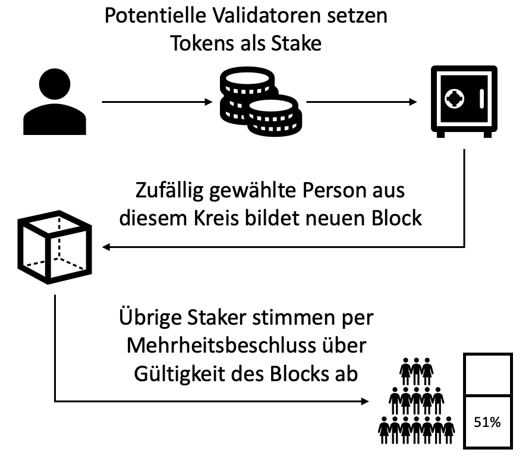

Aufgrund des enormen Ressourcenverbrauchs, welcher für den Proof-of-Work Mechanismus aufgebracht werden muss wird oft nach Alternativen für diesen Konsens Mechanismus gesucht. Eine verbreitete Alternative ist der Proof-of-Stake Mechanismus, welcher bei Währungen wie Ada angewandt wird. Hier wird der nächste Validator durch Zufallsauswahl bestimmt und aus dem Netzwerk ausgelost. Die Losung erfolgt jedoch nicht vollkommen zufällig. Theoretisch kann jeder Teilnehmer des Netzwerks ausgewählt werden, doch der Proof-of-Stake Mechanismus basiert auf dem Stake eines Nutzers. Der Stake ist eine gewisse Anzahl an Tokens der jeweiligen Kryptowährung, die hinterlegt werden muss, um als Validator in Frage zu kommen. Die Wahrscheinlichkeit dann für die Bildung des nächsten Blocks ausgewählt zu werden, hängt von der Höhe des Stakes ab.
Nachdem der Ausgewählte den neuen Block gebildet hat, stimmen die übrigen Validatoren per Mehrheitsentschluss über dessen Gültigkeit ab. Auch hier bestimmt die Höhe des Stakes die Höhe des Stimmrechts der einzelnen Validatoren. Gleichzeitig ist die erlaubte Höhe des Stakes eines einzelnen Validators nach oben begrenzt, um Dezentralität sicherzustellen.
Wird der Block für gültig befunden, erhalten alle, die für dessen Gültigkeit gestimmt haben, eine anteilige Belohnung. Stimmt jedoch die Mehrzahl dafür, dass der Block ungültig ist, verlieren die Befürworter ihren Stake. Die Belohnung besteht aus der Transaktionsgebühr, die Nutzer bei jeder Transaktion zahlen.
